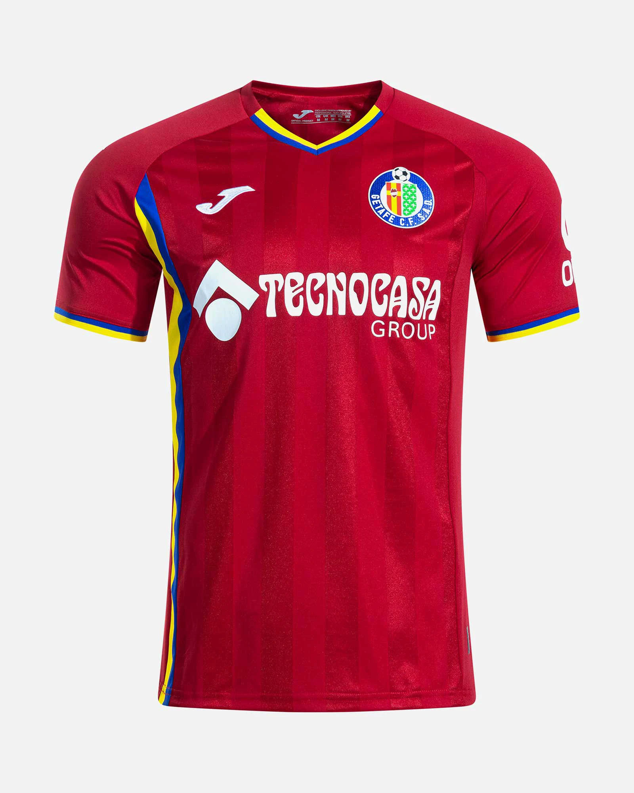

La historia del Getafe Club de Fútbol está marcada por su refundación en 1983 y su ascenso constante hasta consolidarse en la élite del fútbol español, donde debutó en la temporada 2004-05. Fundación y primeros años Los orígenes del fútbol en Getafe se remontan a 1923 con la Sociedad Getafe Deportivo, pero el club actual se fundó oficialmente el 8 de julio de 1983, después de que el anterior Club Getafe Deportivo se disolviera por problemas financieros. El nuevo club, que comenzó en ligas regionales, logró cuatro ascensos consecutivos para llegar a Segunda División B (tercera categoría).

Sus equipaciones la mayoria de veces son la primera azul, y la segunda roja y la tercera suele variar un poco
